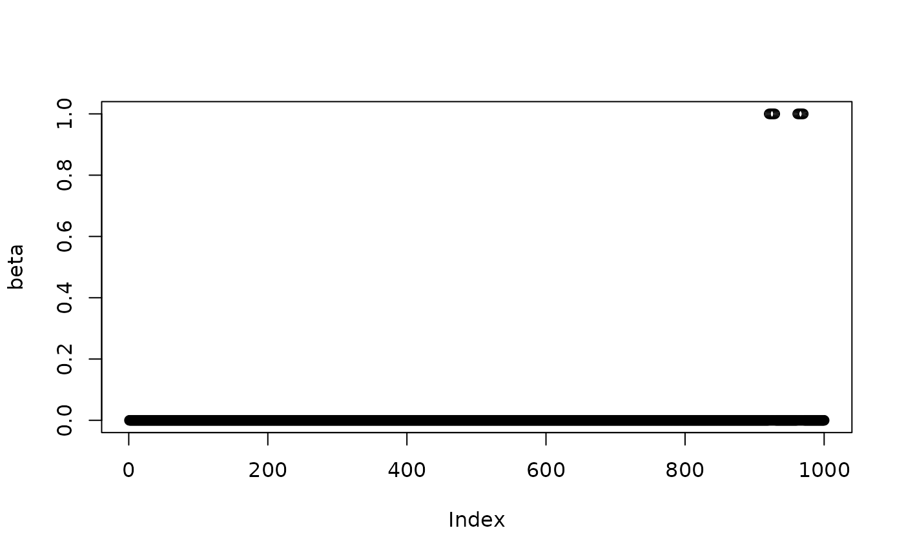
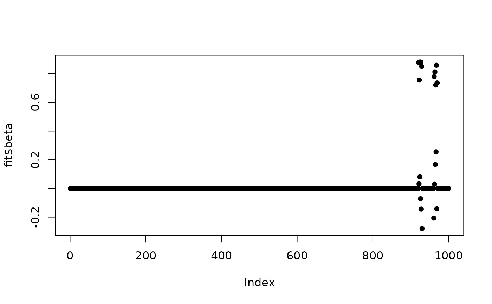

Fast and automatic tuning and fitting for group lasso penalized least squares
Source:R/autotunegg.R
autotunegg.RdFits group lasso penalized least squares model over regulraization path determined by intermediate estimates of noise variance \(\hat \sigma^2\).
Usage
autotunegg(
x,
y,
group,
alpha = 0.01,
standardize = TRUE,
standardize_response = TRUE,
intercept = TRUE,
active = NULL,
trace_it = FALSE,
sigma_tolerance = 1e-08,
beta_tolerance = 1e-08,
sigma_iter_max = 100,
beta_iter_max = 100,
active_iter_max = 100,
tau = 0.5
)Arguments
- x
Matrix of predictors, of dimension \(n \times p\) with \(n\). observations of \(p\) variables
- y
Vector of responses, length \(n\).
- group
Vector of consecutive integer group labels, length \(p\)
- alpha
Significance level for sequential Wald tests, default is 0.01
- standardize
Whether to standardize prior to tuning and fitting, default is
TRUE. Coefficients are transformed back to original scale after model convergence. Strongly recommended as this algorithm does not implement standardized group lasso.- standardize_response
Whether Y is demeaned, default is
TRUE.- intercept
Whether to include an intercept, default is
TRUE.- active
Whether to implement active set selection. Default is
TRUEwhen all groups have 5 or more members, andFALSEotherwise.- trace_it
Whether to print out iteration details, default is
FALSE.- sigma_tolerance
Convergence termination tolerance for the initial tuning of \(\sigma^2\) and \(\lambda\). Default is \(1e-8\).
- beta_tolerance
Convergence termination tolerance after \(\sigma^2\) and \(\lambda\) are obtained. Default is \(1e-8\).
- sigma_iter_max
Maximum number of iterations allowed for the initial tuning of \(\sigma^2\) and \(\lambda\). Default is
100.- beta_iter_max
Maximum number of iterations allowed after \(\sigma^2\) and \(\lambda\) are obtained. Default is
100.- active_iter_max
If
active = TRUE, limits the number of updates to the active support set. Default is100.- tau
Scaling for initialization of \(\lambda\). Initial \(\lambda = \lambda_{\max} \times \tau\). Must be smaller than
1or the algorithm will get stuck. This scaling is removed once \(\hat{\sigma}^2\) is smaller than \(\text{Var}(Y)\).
Examples
# generate simple data
library(autotunegg)
set.seed(2026)
n <- 100
pg <- 10
p <- pg*n
group <- rep(1:n, each = pg)
# 2 target groups (beta = 1)
s <- 2*pg
beta <- rep(0,p)
beta[group == sample(unique(group), 2)] = 1
x <- matrix(rnorm(n*p),n,p)
snr <- 4
error.sd <- sqrt(sum(beta^2)/ snr)
err <- rnorm(n, 0, error.sd)
y <- x %*% beta + err
fit <- autotunegg(x, y, group, active = TRUE, trace_it = TRUE)
#>
Iteration: 1
Iteration: 2
#> No of predictor group significant for sigma estimation: 2
# # plot beta's
plot(beta, pch = 1)

plot(fit$beta, pch = 16)

# print confusion matrix
table(beta == 1, fit$beta == 1)
#>
#> FALSE
#> FALSE 990
#> TRUE 10
# Estimated \eqn{\hat \sigma^2} path vs empirical
fit$CD.path.details$count_sig_beta
#> NULL
var(err)
#> [1] 2.485548